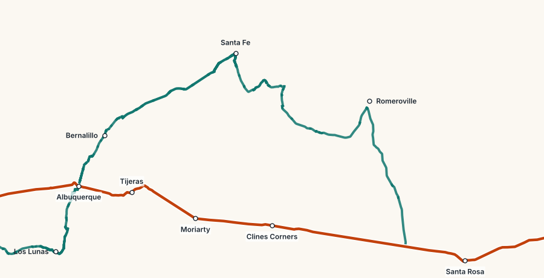

Route 66 Mile by Mile · 2027–2028 Edition
Roads close, diners change hands and motels reopen. This page lists what has changed since the book went to press, so you can mark it on the right page before you drive.
These were changing when the book went to press. Check them again the week you leave.
Flood-damaged bridges keep the National Trails Highway closed between the Fenner area and Kelbaker Road. San Bernardino County describes the closed section as Cadiz Road to Mountain Springs Road. Detour on I-40 from Fenner to the Kelbaker Road exit, then south to old 66. Before you set out, ring San Bernardino County Public Works on (909) 387-7910 or see its road-closures page.
Sells gas and souvenirs. In mid-2026, work was under way to get the motel rooms ready for overnight guests.
Open for photos, drinks and souvenirs; the kitchen is closed. The owner's family was still deciding the cafe's future in October 2026.
The visitor center inside the 1925 depot was closed for renovation in 2026. The Kelso Dunes and the depot grounds stay open. Check the National Park Service's Mojave National Preserve page before the drive north on Kelbaker Road.
Mostly converted to long-term apartments. In January 2026 the owners said 15 rooms would return to overnight rental. The neon sign stays lit.
The 1948 motel reopened to overnight guests in 2026 after a volunteer-led restoration.
Reopened to swimmers, and later to divers, after part of the underwater wall collapsed in June 2024. Signs mark the damaged west wall.
The family is working on an interpretive center inside the 1933 station. View it from the road until it opens.
A bill to make Route 66 a National Historic Trail was placed on the Senate calendar in September 2026.

The loop adds about 130 miles and at least half a day. Much of it is now modern highway, so use this map to plan and a phone map for the turns in Santa Fe and Albuquerque. Chapter 10 of the book has the history.
The book's checklists and worksheets, as PDFs to print and take with you.
Found a stop closed, a new owner, a road reopened? Send the state, the milepost from the book and what you saw, with the date. Checked corrections go on this page and into the next edition.